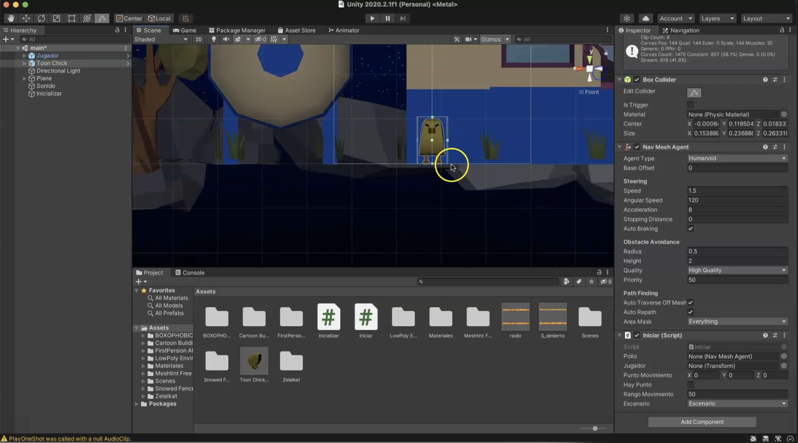
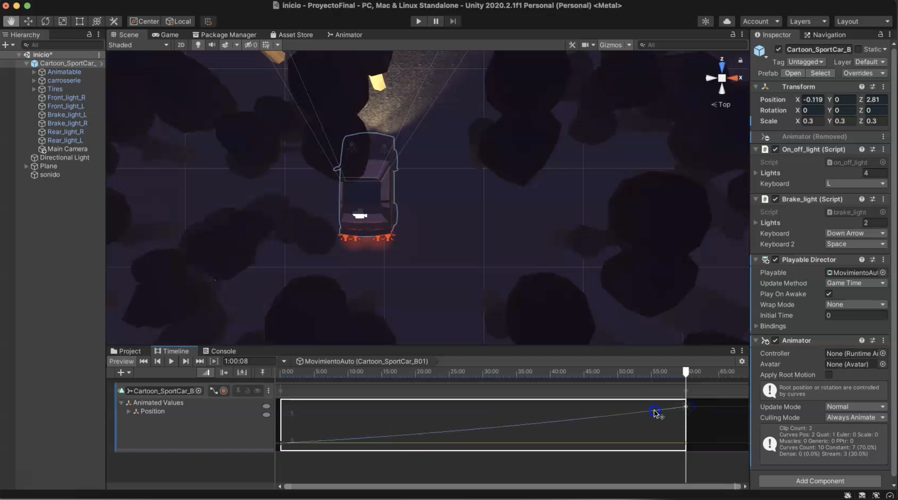
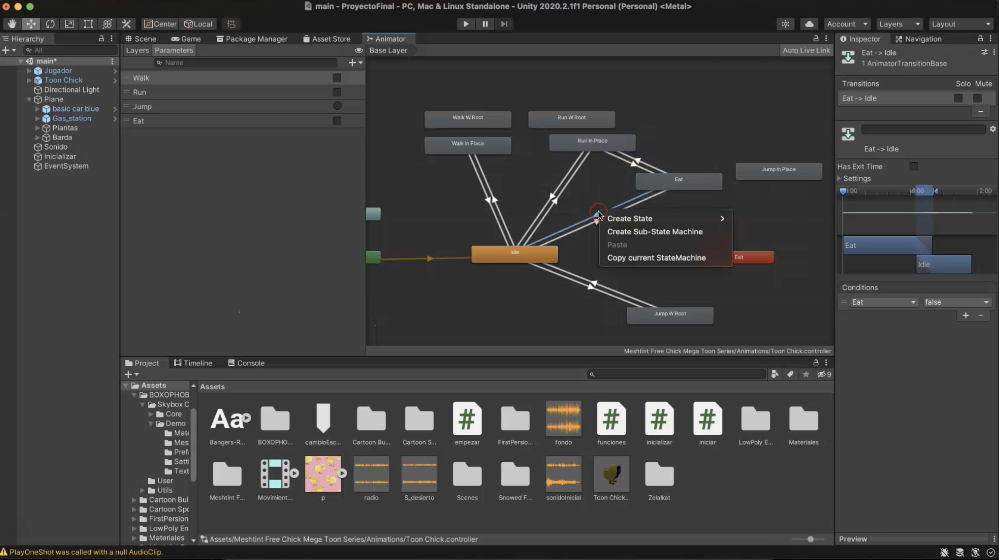

De camino a Puerto Vallarta te has quedado sin gasolina, y si, justo en medio de la nada...
Pero no te preocupes, a lo lejos se alcanza a ver una gasolinería, solo tendrás que atravesar el camino oscuro, llenar tu garrafa y volver a tu carro. Sencillo, no?
Construiremos un escenario nuevo, esta vez será de noche y casi no alcanzaremos a ver nada, estamos perdidos, y lo único que se alcanza a ver (a lo lejos) es una gasolinería.
Agrega todo lo que se te ocurra en el camino.
Comenzaremos agregando una nueva versión de unity para poder utilizar la opción de contruir para web
En la sección de installs de tu Unity Hub, seleccionarás la opción del boton add que te permitirá agregar una nueva versión de unity
Nota:
No es necesario que pongas la versión de unity más reciente, puedes usar la que te guste o te acomode más
Si en tus versiones ya tienes una con la opción de construir para web, puedes usar esa y no agregar una nueva.
En esta parte se muestra como se va construyendo el escenario, agregando assets como los árboles, las montañas de fondo, la estación de gasolina, el carro del personaje, entre otras cosas.
Para que quede algo así...
Nota:
A partir del minuto 9 se ve cómo utilizo el asset del skybox, que por cierto nunca había usado, así que se ve cómo estuve intentando hasta que me gustó. como quedó
Pss.. Dale clic para que te lleve al video
Agregaremos sonido ambiental al juego, para esto darás clic derecho en el menú de jerarquía, y seleccionarás la opción de Create Empty, cambiamos el nombre del gameObject, en mi caso le puse "Sonido" y en el menú del inspector le añadimos un componente nuevo Audio Source, aquí arrastramos el sonido que previamente agregamos a nuestra carpeta del proyecto en la opción de Audio Clip y listo, podrás modificar cosas como el volumen, o si quieres que se esté repitiendo constantemente.
Además podemos agregar sonido en un lugar específico, en este caso le aplicaremos al carro el sonido de un radio que no puede sintonizar una estación.
El sonido se escuchará más fuerte entre más cerca te encuentres del carro.
Definiremos el espacio del plano por donde podrán caminar nuestros personajes
Es como cuando en lo juegos definen que las personas caminen por la banqueta o que los carros vayan en la carretera en algún sentido.
Pss.. Dale clic para que te lleve al video
En esta parte diseñaremos la interfaz del inicio del juego, puedes ponerle musica, creo que le da un toque al juego
Al final moví los textos y tamaños, así que no quedó justo como se ve aquí.
En esta parte diseñaremos un timeline para dar introducción al juego.
Se vería algo así...
Pss.. Dale clic para que te lleve al video
Lo que hacemos es crear una linea de tiempo donde moveremos el carro a través del plano, puedes agregar otros movimientos, como rotaciones en el eje z para que se vea el movimiento en el carro. La idea es que al final se vea como fue que llegamos al medio de la nada sin gasolina para poder empezar el juego.
Agregaremos sonido a los pollitos para cuando caminen, persigan y ataquen
Además se utilizaron las animaciones que venían por defecto con el prefab.
Recuerda que los sonidos los debes agregar a tu prefab (el pollito que creamos como prefab que se encuentra en la carpeta del proyecto).
Pss.. Dale clic para que te lleve al video
En este video creamos una barra de vida que disminuirá según los ataques que recibas por los pollitos.
Utilizaremos el Script iniciar (que es con el que le damos ataques a los pollitos)
Recuerda que para poder usar una imagen en un canva, debes seleccionarla y en la opcion de texture type cambiar su valor a Sprite (2D an UI)
En esta parte lo que haremos será cargar gasolina al llegar a la estación.
Solo estando en esa área se podrá cargar y para eso usaremos un gameObject que en su Box Collider esté como Is Trigger, para que puedas estar sobre el
Creamos un panel que aparecerá en caso de que la vida se nos haya acabado
Aquí agregamos a los botones la función que nos cambie de escena según lo que el usuario decida
Uso el GameObject inicializar (que ya teníamos) para agregar otro script el cual hará las funciones para los cambios de escenas.
Puedes checar en File>build settings y ahí se verán las escenas y el número que les corresponde